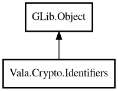

Identifiers
Object Hierarchy:

Description:
public class Identifiers : Object
Utility class for UUID/ULID/KSUID generation and conversion.
Content:
Static methods:
- public static int compareByTime (string a, string b)
Compares identifiers by embedded timestamp.
- public static string? fromBytes (uint8[] bytes, string type)
Converts bytes to identifier string of given type.
- public static bool isKsuid (string s)
Returns whether string is valid KSUID.
- public static bool isUlid (string s)
Returns whether string is valid ULID.
- public static bool isUuid (string s)
Returns whether string is valid UUID.
- public static string ksuid ()
Generates KSUID string.
- public static Identifier? parseKsuid (string s)
Parses KSUID into identifier value object.
- public static Identifier? parseUlid (string s)
Parses ULID into identifier value object.
- public static Identifier? parseUuid (string s)
Parses UUID into identifier value object.
- public static int64? timestampMillis (string id)
Extracts timestamp milliseconds from identifier.
- public static uint8[]? toBytes (string id)
Converts identifier string to bytes.
- public static string ulid ()
Generates ULID string.
- public static string ulidMonotonic ()
Generates monotonic ULID string.
- public static string uuidV4 ()
Generates random UUID v4 string.
- public static string uuidV7 ()
Generates time-ordered UUID v7 string.
Creation methods:
Inherited Members:
All known members inherited from class GLib.Object
- @get
- @new
- @ref
- @set
- add_toggle_ref
- add_weak_pointer
- bind_property
- connect
- constructed
- disconnect
- dispose
- dup_data
- dup_qdata
- force_floating
- freeze_notify
- get_class
- get_data
- get_property
- get_qdata
- get_type
- getv
- interface_find_property
- interface_install_property
- interface_list_properties
- is_floating
- new_valist
- new_with_properties
- newv
- notify
- notify_property
- ref_count
- ref_sink
- remove_toggle_ref
- remove_weak_pointer
- replace_data
- replace_qdata
- set_data
- set_data_full
- set_property
- set_qdata
- set_qdata_full
- set_valist
- setv
- steal_data
- steal_qdata
- thaw_notify
- unref
- watch_closure
- weak_ref
- weak_unref